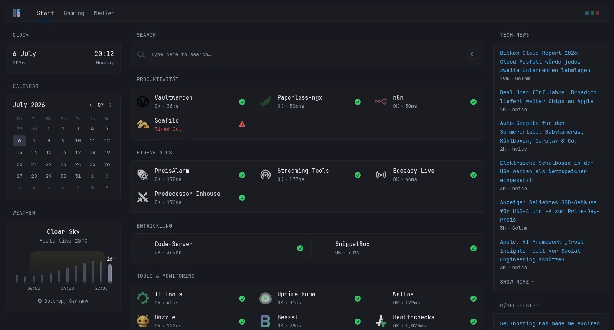
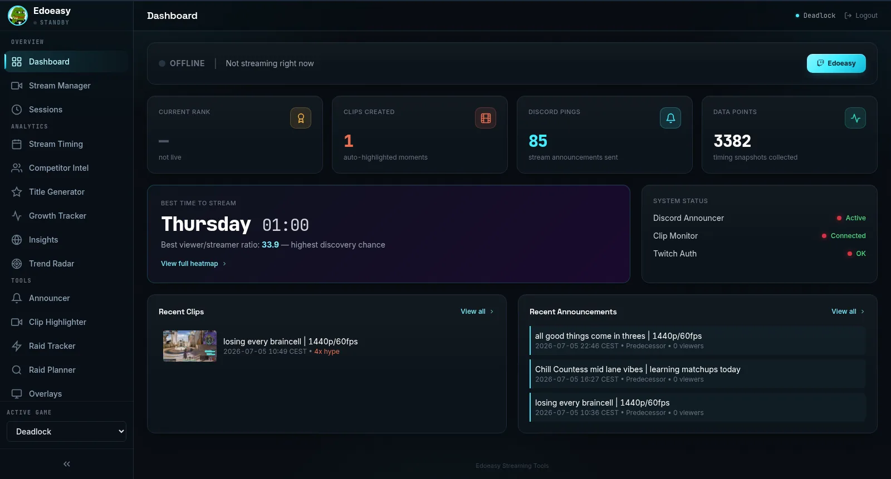
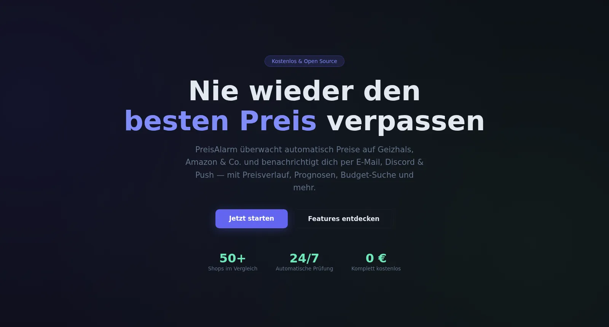
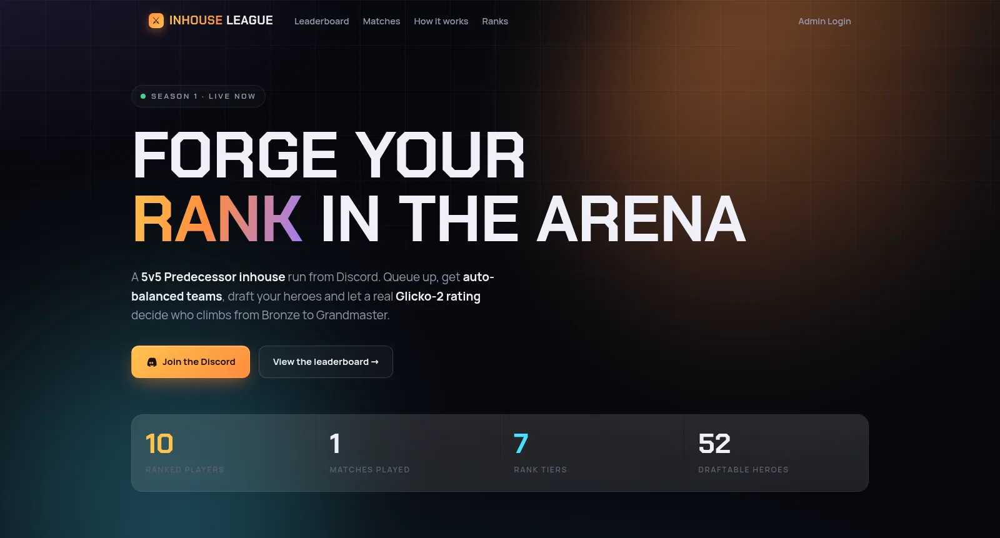
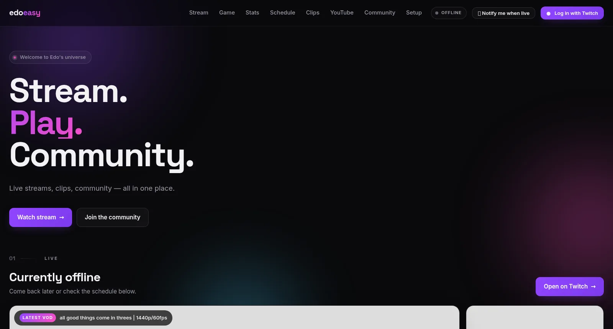

Keine Übungsprojekte: Dieser Stack läuft rund um die Uhr auf eigener Hardware — vier selbst entwickelte Web-Apps, Zero-Trust-Zugriff über Cloudflare, automatisierte Backups und Monitoring mit Push-Alerts aufs Handy.
37 Docker-Container in Produktion: Passwort-Manager, Dokumenten-Management mit OCR, Datei-Cloud, Workflow-Automation und die eigenen Apps — alle Dienste öffentlich erreichbar ohne ein einziges offenes Port-Forwarding. Der Traffic läuft durch einen Cloudflare Tunnel, sensible Dienste liegen zusätzlich hinter einem eigenen 2FA-Login-Portal (Authelia, TOTP).

Meine größte Eigenentwicklung: eine Web-App, die einen kompletten Twitch-Kanal datengetrieben steuert. Sie sammelt rund um die Uhr Marktdaten über die Twitch-API, berechnet die besten Sendezeiten aus tausenden Messpunkten und verwaltet Titel, Kategorie und Tags live über EventSub — inklusive KI-Titel-Generator, automatischer Clip-Erkennung bei Chat-Hype und Discord-Ankündigungen.

Überwacht Wunschprodukte automatisch über Geizhals, PriceSpy & Amazon und meldet Preisstürze per E-Mail, Discord und Web-Push. Gibt es in zwei Ausführungen: als Open-Source-Windows-App (MIT-Lizenz) und als selbst gehostetes Webtool mit Multi-User-Login, Preisverlauf und Budget-Suche.

Komplette Liga-Plattform für Community-Matches im MOBA Predecessor: Spieler stellen sich per Discord-Befehl in die Queue, ein eingebetteter Discord-Bot baut automatisch faire 5v5-Teams mit minimaler MMR-Differenz, Ergebnisse fließen in ein Glicko-2-Rating — das Leaderboard und alle Spielerprofile sind öffentlich auf der Website.

Zentrale Anlaufstelle für den eigenen Twitch-Kanal: Live-Status und eingebetteter Player, letzte VODs und Clips, Sendeplan und Community-Links — die Inhalte holt sich die Seite automatisch über die Twitch-API, inklusive „Notify me when live“-Funktion.

Lebenslauf und Portfolio als schlanke, handgeschriebene Seite: reines HTML/CSS/JavaScript ohne Framework, gehostet auf GitHub Pages mit eigener Domain über Cloudflare. Suchmaschinenfreundlich (Schema.org, Sitemap), unter 100 KB pro Seite ohne Bilder — und die Screenshots auf dieser Seite entstanden automatisiert per Headless-Chromium aus dem eigenen Docker-Stack.
Ich erzähle gerne mehr über Architektur-Entscheidungen, Betrieb und was ich dabei gelernt habe.